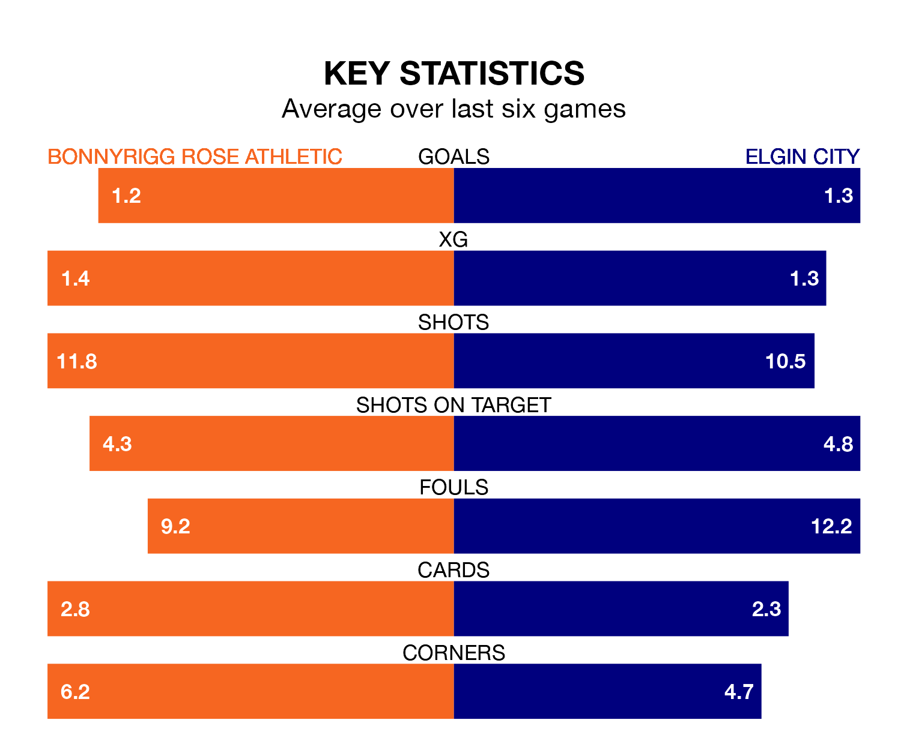

Struggling Elgin City face Bonnyrigg Rose Athletic away at New Dundas Park on Tuesday looking to build on a win in their last league outing.
After securing all three points with a 1-0 victory over East Fife on Saturday, the Black & Whites sit eighth in League Two.
They travel to play a Bonnyrigg Rose side fifth in the standings, who were held in their last match, 0-0 against Stranraer.
In the last 10 years, Bonnyrigg Rose and Elgin have played each other on six occasions. They won three each.
On average, Bonnyrigg Rose scored 1.8 goals and the Black & Whites 1.3 in those matches.
Their last meeting was on November 11, when Elgin won 2-0 at home.
In Neil Martyniuk, Bonnyrigg Rose have one of the league's sharpest shooters so far this season. He has notched nine goals in 21 appearances, to sit third in the scoring charts.
His goal rate of one every 204 minutes is quicker than that of Russell Dingwall, Elgin's top scorer with a goal every 363 minutes, and a total of four goals in 17 games.
With 19 goals in 22 games so far this season, City are the league's lowest scorers with 0.9 goals per game. And they are conceding more than average, letting in 38 goals at a rate of 1.7 per game.
Athletic, meanwhile, are above average scorers, with 1.4 goals per game, compared to a league average of 1.3. They have also conceded 1.4 goals per game.
The home side are in disappointing form in League Two, with one win and three draws from their last six games.
With four wins and two losses over that period, the Black & Whites' form is much better – they have taken 12 points from 18, compared to Bonnyrigg Rose's six.
Updated: 10:01 (UTC), 06/02/24